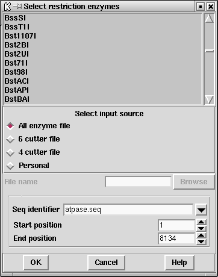

Files of restriction enzyme names and their cut sites are stored in disk files. For the format of these files see
section Restriction enzyme files.
Standard four-cutter, six-cutter and all-enzymes files are available and
the users can use their own "personal" files. To create your own file
of enzymes you may need to extract the information from the currently
defined files. These are pointed to by the RENZYM.4,
RENZYM.6 and RENZYM.ALL environment variables.

When the file is read the list of enzymes is displayed in a scrolling window. To select enzymes press and drag the left mouse button within the list. Dragging the mouse off the bottom of the list will scroll to allow selection of a range larger than the displayed section of the list. When the left button is pressed any existing selection is cleared. To select several disjoint entries in the list press control and the left mouse button. Once the enzymes have been chosen, pressing OK will create the plot.